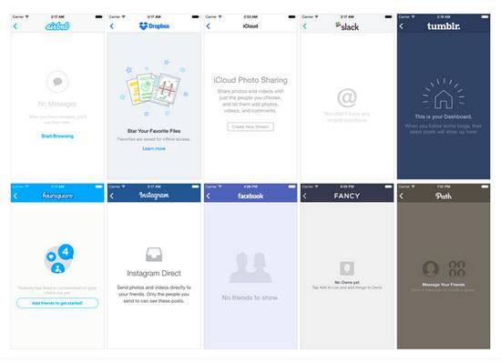
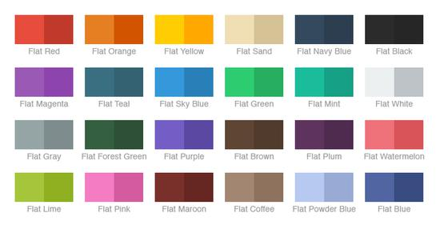
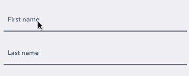
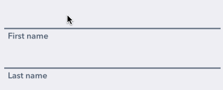
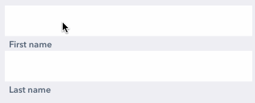
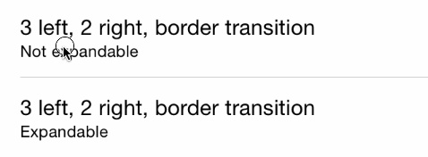
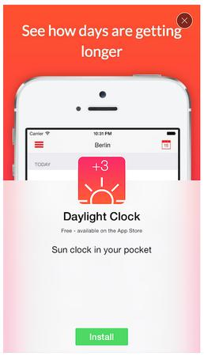
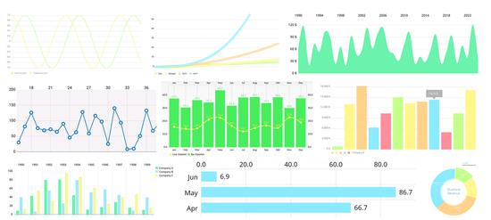

Amo el código abierto, y aún más a esos desarrolladores que dedican su valioso tiempo libre a crear maravillas. Gracias a ellos por compartir desinteresadamente los frutos de su arduo trabajo. Autores y contribuyentes de código abierto, son increíbles, gracias por todo lo que hacen.
Dado que soy de los que no pueden vivir sin coleccionarlo todo, aquí he seleccionado algunas bibliotecas de código abierto de iOS según mis gustos personales. El orden de estos proyectos es completamente aleatorio, y cada uno es increíble. La mayoría son compatibles con CocoaPods, así que añadirlos a tu proyecto de Xcode es pan comido.
Al final de este artículo puedes encontrar una versión de «texto largo, precaución»: una lista simple solo con títulos y enlaces de proyectos. Si crees que este artículo es útil, compártelo con otros colegas que desarrollen en iOS; hasta el buen vino necesita darse a conocer.
DZNEmptyDataSet es una forma bastante estándar integrada en iOS, adecuada para manejar table views y collection views vacías. Por defecto, si tu table view está vacía, la pantalla queda vacía, y así la experiencia del usuario no es ideal.

Con esta biblioteca, solo tienes que cumplir algunos protocolos, e iOS automáticamente manejará perfectamente la collection view y mostrará los mensajes al usuario de manera adecuada y atractiva. Cada proyecto de iOS puede manejarse automáticamente, sin tener que preocuparse uno por uno.
¿Tu aplicación necesita un componente de calendario simple, bonito y que funcione bien? Ahora lo tienes: PDTSimpleCalendar quizá pueda considerarse el mejor componente de calendario para iOS. Puedes personalizarlo en todos los aspectos, tanto en la lógica de funcionamiento como en la apariencia.

Todos dicen: Core Data es simple y fácil de usar. Luego dicen: es estupendo y muy útil. ¿Ah, de verdad, Apple? La gran cantidad de código repetitivo que se añade a cada proyecto no cumple en absoluto con el estándar de simplicidad y facilidad de uso. Ni hablar de añadir, eliminar y actualizar un montón de entidades, guardar contextos, crear diferentes pilas de Core Data según el entorno, etc. Por supuesto, me encanta Core Data, pero Apple realmente podría simplificarlo mejor: usando el enfoque MagicalRecord.

MagicalRecord es como un envoltorio para Core Data, que oculta todo lo irrelevante. Si alguna vez has usado el patrón active record (como en Ruby on Rails), ya sabes de qué hablo. Lo recomiendo encarecidamente; los que usen Core Data en sus aplicaciones definitivamente deben probarlo.
4. Chameleon
Si has llegado hasta aquí, supongo que eres más un mono programador que un león diseñador. Aquí hay algo que te viene muy bien.

Chameleon es un framework de colores para iOS. Utiliza colores planos modernos para extender UIColor de forma muy atractiva. También podemos usarlo para crear paletas con colores personalizados. Tiene muchas más funciones; consulta el readme. Si quieres que tu aplicación sea hermosa, definitivamente añade esta biblioteca a tu proyecto.

5. Alamofire
Alamofire es una biblioteca de red concisa, escrita en Swift. ¿Has usado alguna vez AFNetworking? Alamofire es su hermano pequeño. Más joven y moderno, claro (AFNetworking está escrito en Objective-C).
Si necesitas realizar tareas relacionadas con la red, como descargas, subidas y obtención de JSONs, Alamofire es justo lo que necesitas. Con más de 8000 recomendaciones en GitHub, seguro que no falla.
¿No te parece que el UITextField estándar es un poco aburrido? Yo también lo creo: ¡conoce TextFieldEffects! Sin muchas palabras, solo tienes que ver algunos ejemplos:



Sí, son controladores drop-in sencillos. Incluso puedes usar IBDesignables en el storyboard.
Desafortunadamente, esta biblioteca no es compatible con CocoaPods (si vienes del futuro y esto cambia algún día, asegúrate de avisarme en Twitter), pero sí es compatible con Carthage. Solo descarga el proyecto desde GitHub y colócalo en tu workspace.
7. GPUImage
¿Has escrito alguna vez una aplicación de cámara? Si no, pronto seguramente te encontrarás con esta biblioteca.

GPUImage nos proporciona efectos de cámara acelerados por GPU (compatible con fotos y vídeos), y además procesa a gran velocidad. En la App Store, hay cientos de aplicaciones que usan esta biblioteca. Yo también tengo una aplicación que usa GPUImage. Ha obtenido 8869 estrellas en GitHub y sigue creciendo.

8. iRate
¿Cuál es la mejor manera de obtener más reseñas en la App Store? Para responder a esta pregunta carezco de datos concretos, pero si tuviera que adivinar, sugeriría preguntar a los usuarios. Quizás sea un poco clásico: la mayoría de desarrolladores ahora crean alertas personalizadas dentro de la aplicación.
Pero si no tienes tiempo, o no quieres implementarlo desde cero, es mejor usar iRate. Esto es iRate: una biblioteca pequeña que puedes añadir a tu proyecto; olvídate de encuestas y demás. iRate resolverá el problema en el momento adecuado.
Te guste o no el patrón singleton, gestionar GameCenter es mucho mejor que otros patrones opuestos que conocemos. (Tu juego solo tiene un GameCenter, ¿verdad?)
Para ser honesto, gestionar el GameCenter estándar en iOS no es difícil, pero con esta biblioteca es más simple y rápido. ¿No es mejor mejorar lo bueno?

He usado esto en uno de mis juegos, y la experiencia es muy buena.
¡Atención, esto es realmente genial! Es uno de mis controles favoritos de iOS. PKRevealController es un menú lateral deslizante (puede deslizarse hacia la izquierda, hacia la derecha o hacia ambos lados); basta con un toque ligero del dedo (o pulsar un botón, pero así no es tan elegante al deslizar).

He probado otras bibliotecas que ofrecen este tipo de control, y PKRevealController es el mejor. Instalación sencilla, altamente personalizable y con buen reconocimiento de gestos. Puede usarse como un control estándar en el SDK de iOS.
¿Has usado alguna vez la aplicación de Slack para iOS? Si trabajas en una gran empresa de software, quizás sí. ¿Y para los que no la han usado? Slack es emocionante. Las aplicaciones que usan Slack también lo son, especialmente cuando se utiliza como un excelente control de entrada de texto personalizado. Aquí tienes un código listo para usar en tu aplicación.
¿Zonas de texto adaptables? Pruébalo.
¿Reconocimiento de gestos, autocompletado, fusión multimedia? Pruébalo.
¿Soluciones drop-in rápidas? Pruébalo.
¿Qué más quieres?
RETableViewManager te ayuda a crear y gestionar table views dinámicamente. Nos proporciona celdas predefinidas (bool, texto, fecha, etc. — mira las capturas de abajo), pero también puedes crear vistas personalizadas y usarlas junto con las vistas predeterminadas.

¡La captura de la izquierda se ve muy anticuada! Sin esta biblioteca en el storyboard, esto es todo lo que puedes hacer, pero a veces el código es mejor que un editor visual.
13. PermissionScope
Con esta biblioteca puedes informar al usuario sobre los permisos del sistema necesarios antes de preguntarle, ofreciendo una mejor experiencia. Mayor aceptación —> más usuarios activos -> mayor retención -> mejores datos -> más descargas. Recomiendo encarecidamente este pod.

14. SVProgressHUD
Esta imagen se carga con normalidad, sin esperar demasiado ni refrescar la página. Así es como se comporta SVProgressHUD en tu aplicación. Si necesitas un indicador de espera personalizable, este es el indicado (quizás el mejor).

15. FontAwesomeKit
Font Awesome es increíble; con él puedes añadir fuentes a tu proyecto fácilmente, con multitud de usos.

16. SnapKit
¿Te gusta Auto Layout? ¡Por supuesto que sí!Al menos cuando lo creas en el storyboard. Crear constraints manualmente en código es muy doloroso, pero afortunadamente tenemos SnapKit; úsalo en el storyboard y podrás escribirlos de forma simple e intuitiva.

17. MGSwipeTableCell
Este es otro componente de UI común en muchas aplicaciones. Apple debería considerar añadir algo similar al SDK estándar de iOS. Celdas de tabla deslizables son la mejor descripción de este pod, y también es el mejor.



Estos son solo tres de los tipos de animación; hay muchas más variaciones, consulta el readme.
18. Quick
Para pruebas unitarias en Swift (también se puede usar con Objective-C), integrado con Xcode. Si eres fan de Objective-C, te sugiero usar Specta en lugar de este, pero para usuarios de Swift, Quick es la mejor opción.


19. IAPHelper
Las compras dentro de la aplicación nos dan mucho código de muestra, pero esta biblioteca se deshace de ese código y envuelve de manera simple la mayoría de las tareas comunes relacionadas con transacciones de dinero.
20. ReactiveCocoa
Bueno, esta es una pequeña bestia.
ReactiveCocoa no es como las otras bibliotecas de la lista; no es un proyecto drop-in pequeño. ReactiveCocoa nos trae un estilo y una estructura de programación muy diferentes; se basa en señales y flujos de datos. Primero necesitas olvidar todo lo que sabes para entender su forma de trabajar. Es muy difícil, pero de gran valor.
Enseñar ReactiveCocoa aquí no es apropiado, pero si te interesa, proporcionaré algunas buenas fuentes:
- Getting Started with ReactiveCocoa
- Mattt Thompson：ReactiveCocoa
- ReactiveCocoa Tutorial – The Definitive Introduction: Part 1/2
Nota: para los amigos de nuestra comunidad de desarrollo iOS, esto será una tarea con un poco más de contenido técnico.
21. SwiftyJSON
Hace que el análisis de JSON en Swift sea simple.
22. Spring
Mejora las animaciones en simplicidad, encadenabilidad y declaratividad.
23. FontBlaster
Simplifica la carga de fuentes personalizadas.
24. TAPromotee
La promoción cruzada de aplicaciones es una de las mejores estrategias de marketing que puedes implementar de forma gratuita. Usar esta biblioteca es tan sencillo que es imposible no hacerlo: añade TAPromotee a tu podfile, configura gratis y disfruta de más descargas.

25. Concorde
¿Cargas un montón de jpeg en tu aplicación? Con Concorde, puedes resolverlo de una manera mucho mejor; es un gran avance.

26. KeychainAccess
Un pequeño asistente para gestionar el acceso a Keychain.
27. iOS-charts
El último, pero no por ello menos importante: ¡una biblioteca de gráficos para iOS! Muy útil y hermosa, no necesito decir más. Mira hacia abajo y verás lo que puedes hacer con ella.
Así es, todo se convierte en componentes drop-in (o quizás componentes "code-in").


Desafortunadamente, todavía no es compatible con CocoaPods, así que tendrás que arrastrarlo manualmente a tu workspace de Xcode.
Toca para compartir notas
<p style="font-size:14px;">¡La nota debe ser una extensión del contenido de este artículo!</p><br> <p style="font-size:12px;"><a href="../tougao.html" target="_blank">Para enviar un artículo, haz clic aquí</a></p> <p style="font-size:14px;"><a href="./runoob-user-test-intro.html" target="_blank">Cómo obtener el código de invitación de registro</a></p> <h3 class="text-muted"><i class="fa fa-info-circle" aria-hidden="true"></i> Antes de compartir notas, debes <a href=".." class="runoob-pop">iniciar sesión</a>!</h3> <p><a href="./runoob-user-test-intro.html" target="_blank">Cómo obtener el código de invitación de registro</a></p>